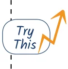
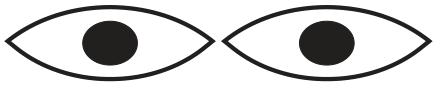

- What radius should be taken in the compass to get this half circle? What should be the length of AX?
- Take a central line of a different length and try to draw the wave on it.
- Try to recreate the figure where the waves are smaller than a half circle (as appearing in the neck of the figure, ‘A Person’). The challenge here is to get both the waves to be identical. This may be tricky!

- Eyes How do you draw these eyes with a compass?

For a hint, go to the end of the chapter.
Make other artwork of your choice with a ruler and a compass.